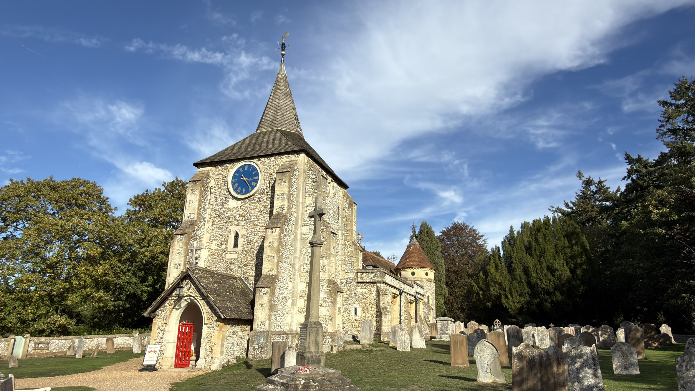

A warm welcome to
Mickleham &
Westhumble
A friendly church community in the heart of the Surrey Hills. Whoever you are, you are welcome here.
Life at St Michael’s
Faith, friendship and community throughout the year


Watch & listen
Sunday Services
From our church’s existing YouTube playlist
Services, reflections and moments from parish life.
More videosMedia
Latest Sunday service
The latest-listed video from the church's Sunday Services playlist appears here. Video titles and service details are provided by YouTube.
Visit the Sunday Services page

You are very welcome
A place to worship, belong and serve.
St Michael and All Angels in Mickleham and the Chapel of Ease in Westhumble are part of a friendly local church community.
We seek to grow spiritually, make Jesus Christ known and serve our neighbours.
Meet our parish Discover our churches
Discover our churches
Latest from St Michael’s
More news →
Care for creation
Eco Church Silver Award 2024
St Michael & All Angels received the A Rocha UK Eco Church Silver Award in 2024, recognising the parish’s care for creation.
Discover our Eco Church work